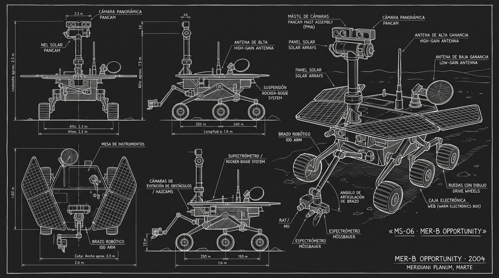

Opportunity

Iba a durar 90 días y aguantó 5.111 soles. Recorrió 45,16 km antes de que una tormenta de polvo lo apagara.
Sin contacto desde el 10 de junio de 2018. Misión declarada finalizada el 13 de febrero de 2019. Personas: Steve Squyres
Lo que hizo
- Mi destino — Me mandaron a Meridiani Planum porque desde la órbita se veían minerales que solo se forman con agua. Mi trabajo era bajar y comprobarlo sobre el terreno, no desde lejos.
- Noventa días — Me diseñaron para durar noventa días marcianos. Aguanté 5.111 y recorrí 45,16 kilómetros: la mayor distancia que ha recorrido un vehículo sobre otro mundo.
- La piedra — En enero de 2005, al lado de mi propio escudo térmico abandonado, encontré una roca del tamaño de un balón que resultó ser un meteorito de hierro y níquel. El primero identificado en otro planeta.
Modelo 3D, chat y cómic, en tres idiomas
Fuentes
- science.nasa.gov/mission/mars-exploration-rovers-spirit-and-opportunity/
- science.nasa.gov/mission/mer-opportunity/
Ver el índice completo · Proyecto del NASA Space Apps Challenge 2026. Contenido con fuentes citadas.